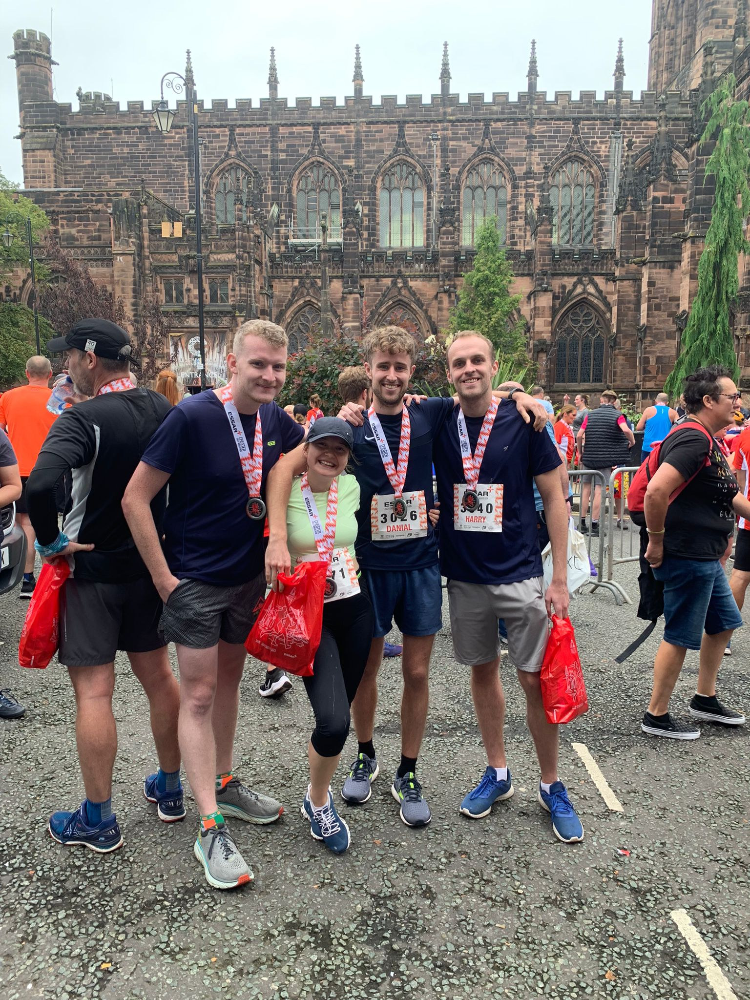

Affiliation
| Year | Institution | Role |
|---|---|---|
| 2022- | University of Liverpool | Postdoctoral Research Fellow |
| 2018-2022 | University of Liverpool | MSc/PhD Student |
| 2015-2018 | University of Liverpool | BSc Geography Student |
Hobbies and Interests
Outside of work you can usually find me doing one of a number of things. In the pandemic I started running and last year completed my first half marathon race in Chester. Nowadays I can regularly be found panting my way round Sefton Park as I try to get fit again.
I am also a huge foodie and coffee fan, and quite often find myself either in Hibiki, Free State Kitchen or Rudy’s for food, The Pen Factory, The Grapes or The Jacaranda for beers and Koffi, Bold St Coffee or Chapters of Us for coffee.
I am also a big gamer, and am currently working my way through the (fantastic) latest release of Pokemon scarlet (I chose fire starter, before you ask…)
